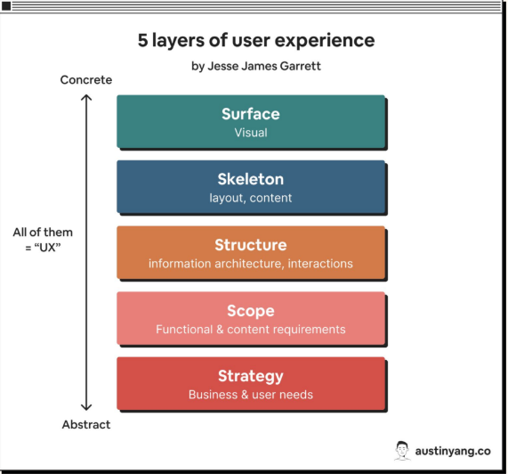
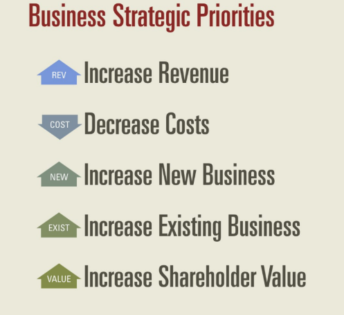
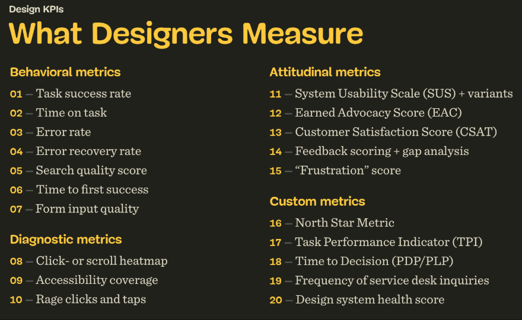
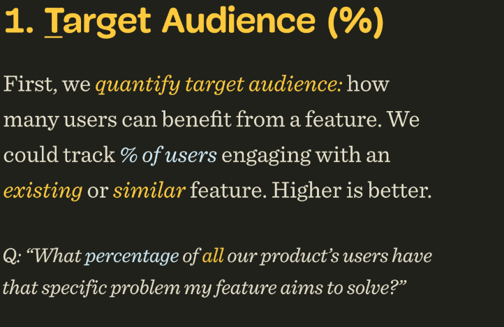
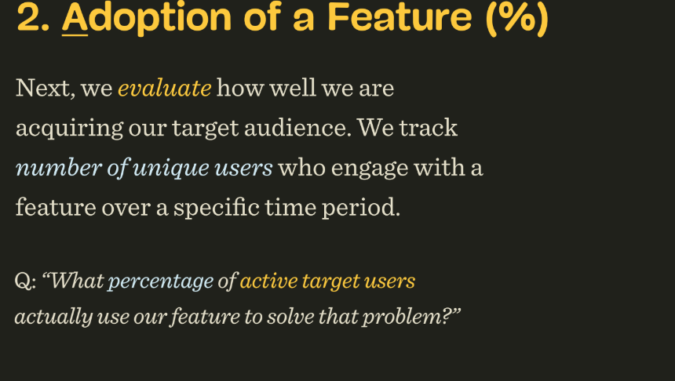

De impact van design
Zodra je begint met meten, word je verantwoordelijk. Daarom moet je goed weten wat je meet en waarom.

Behoeften versus doelen
- User needs — wat de gebruiker daadwerkelijk nodig heeft.
- User goals — wat de gebruiker dénkt dat hij wil doen.
Waarde-architectuur
Een model om de acties van een bedrijf te koppelen aan de waarde die het creëert voor klanten én aan bedrijfsresultaten. Het is ontworpen om de "value gap" te overbruggen tussen het werk van het team en de meetbare impact ervan.

- Features moeten geleverd worden aan het publiek: kan een gebruiker iets niet vinden, dan wordt het iets van 0 waarde.
- De North Star maakt deel uit van de belangrijkste KPI van het bedrijf.
- De user journey is altijd lineair, terwijl de echte wereld dat niet is — die is rommelig.
- Bevriend je met het salesteam: zij hebben een goede band met en kennis van de klant.
Return on Investment (ROI)
Het management wil doorgaans een ROI > 15% zien. Return is meer omzet, maar ook lagere kosten, uitgaven en risico's. Positioneer de waarde die je creëert aan de hand van de waarde die je hebt geleverd. De ROI moet minimaal 15% zijn, maar hoe hoger, hoe beter.

Projected user hours berekenen
Check eerst hoe lang een gebruiker er nu over doet. Stel: 5000 gebruikers, die het 10× per maand gebruiken en er ~1 uur over doen. Na het optimaliseren meet je opnieuw hoeveel tijd ze nodig hebben — het verschil is de bespaarde tijd.
Support hours berekenen
Vraag hoeveel tijd het kost om een probleem voor gebruikers op te lossen, en als tweede vraag: hoe vaak het voorkomt.
Vanity metrics & adoption
- Sessieduur doet er niet echt toe — dat is een vanity metric.
- De adoption rate check je tegen het verleden: voor een side feature is ~20% al hoog, voor een core feature is 40–60% heel gebruikelijk.
- Zelfs bij iets experimenteels kun je het altijd aan iets koppelen.
Stakeholders
Bij weerstand: zijn ze het oneens met het probleem, met de manier waarop je het aanpakt, of denken ze dat je het doel niet haalt door dat probleem op te lossen?
Customer Lifetime Value
De CLV is heel belangrijk: customer value × gemiddelde customer lifespan, oftewel average purchase value × average frequency rate. Meestal bedoelt men niet de gemiddelde levensduur, maar de geactiveerde klant — iemand die al klant is en actief blijft (afhankelijk van het product).
Voting is een slecht idee. Waarom? Je gokt eigenlijk, en mensen stemmen vooral op dingen waar al op gestemd is.
Hoe designers meten

TARS
TARS is een productmetric die vier metrics combineert: Target users, Active users, Retention en Satisfaction. Samen evalueren ze de impact van features en meten ze UX-succes.


- Een reden dat adoption laag is, is dat een feature niet identificeerbaar is. Je kunt ook te hoog zitten qua adoption.
- Retention: een hoge drop-off betekent dat het niet aan de behoefte voldoet, en andersom.
- Je deelt het aandeel actieve gebruikers (bijv. 0,252 van het totaal) door de getargete gebruikers om het echte bereik te zien.